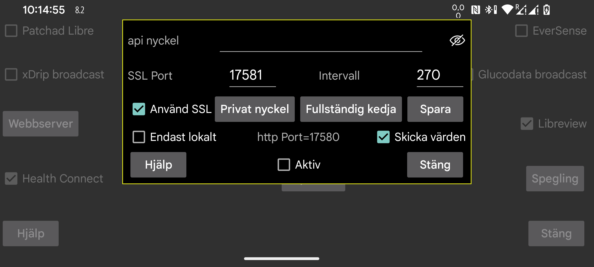

be de es fr nl pl ru sv tr uk zh en
Juggluco har en webbserver genom vilken andra appar kan hämta glukosvärden från Juggluco. Den kan användas av xDrip-klockor och vissa Nightscout-appar.
Att använda appar som är gjorda för att använda webbservern xDrip är relativt enkelt. Kontrollera bara att Aktiv är ikryssad. Därefter kan de ta hämta data från 127.0.0.1 på port 17580. Nightscout server URL: http://127.0.0.1:17580.
Vissa Nightscout-följare kan också använda det. xDrip, Diabox, en Windows Floating Glucose-app och en Windows, Linux och macOS-widget (Owlet) kan användas med http om "Endast lokalt" är avstängt. På MacOS gäller samma sak för Nightscout Menu Bar, Gluco Status och Gluco Tracker (alla i Apple Store). Du behöver också bara http för Nightscouter och LoopFollow (IOS) och Nightguard (IOS och WatchOS).
Om du vill komma åt Juggluco över internet måste du vidarebefordra en port från ditt modem. Se:
https://www.makeuseof.com/tag/what-is-port-forwarding-and-how-can-it-help-me
Vänster mittmeny->Spegling->Lägg till anslutning->->Hjälp
Andra Nightscout-följare använder sig bara av https och det kräver att Juggluco har ett gilltig SSL-certifikat för domännamnet som används för att komma åt Juggluco. Om din externa IP-adress har ett associerat värdnamn kan du få ett certifikat gratis via Certbot. Du kan inte använda den om din externa IP-adress saknar ett värdnamn. Du kan få ett gratis domännamn från freenom.com. Jag provade det, men inom några veckor tog de bara bort domänen ifrån mig utan någon avisering, och när jag försökte registrera den igen kostade det plötsligt pengar. Du kan köpa ett värdnamn för några euro per år (till exempel från strato.nl).
Efter att ha installerat Certbot och omdirigerat port 80 (http) från ditt modem till din dator kan du helt enkelt trycka på:
certbot certonly --standalone --preferred-challenges http -d myhostname
Se https://devpress.csdn.net/linux/62e7999e907d7d59d1c8cfd0.html.
Efter att ha använt Certbot hittade jag den privata nyckeln i /etc/letsencrypt/live/myhostname/privkey.pem och hela kedjan i /etc/letsencrypt/live/myhostname/fullchain.pem. "myhostname" är värdnamnet jag använde.
Om du har fått nyckelfilerna från en SSL-certifikatutfärdare måste du läsa in dem till Juggluco. Den privata nyckeln kan läsas in genom att trycka på "Privat nyckel", hela kedjan genom att trycka på "Fullständig kedja".
Om du bara vill skicka glukosvärden från en Android-enhet till en annan är det lättare att använda Jugglucos speglingsfunktion (Vänster mittmeny->Spegling).
Du behöver SSL för Android-apparna AAPS, Diabetes:M, Nightwatch and Checkmate, Sugarmate (MacOS och IOS) och Xdrip4ios, Shuggah och Cockpit (IOS). Ange som Nightscout-server-URL:
https://hostname:port
värdnamn är värdnamnet för den autentiserade nyckeln du har gett till Juggluco, port är porten du vidarebefordrade till porten du angav i den här skärmen (standard: 17581).
AAPS kan användas med Juggluco 7.3.0 eller senare. För detta måste du välja NSClientV3 i AAPS, med följande inställningar:
Använd api-nyckeln som anges här som NS access token
Stäng av “Connect to websockets”
Stäng av alla uppladdningar under "Synchronization". Slå bara på:
Receive/backfill CGM data
Receive Insulin
Receive carbs
Receive therapy events
Stäng av alla "advanced settings".
Att infoga värden före tidigare inmatade värden gör att AAPS kommer att ha dubbla behandlingar. Detta händer även när v3-gränssnittet används med en Nightscout-server som tar emot v3-uppladdningar från Juggluco.
Ibland ber AAPS servern om behandlingar först efter att AAPS tvångsstoppats och startat om.
Webbservern kan även köras på en Linux-dator. Den kommer att ta emot sina data från en speglings-anslutning från Juggluco ansluten till sensorn: https://www.juggluco.nl/Juggluco/cmdline.
En annan telefon kan ansluta till denna server via en speglings-anslutning eller som Nightscout-följare (till exempel på en Iphone). Om det finns en Nightscout-app som inte fungerar med den här webbservern, berätta gärna det för mig. Kanske kan den fås att fungera med några ändringar. (IOS-apparna Nightscout och Nightscout X är specifika för ett visst Nightscout-serverprogram och fungerar inte med Juggluco.)
api_nyckel: Ange den hemliga nyckel som behövs för att använda tjänsten. Följare kan skicka nyckeln som parameter i http-huvdet, som Nightscout token eller hashat med SHA1 i huvudet. Från och med Juggluco 7.1.15 är det också möjligt att ange nyckeln som det första elementet i sökvägen till Nightscout-serverns URL. Om xyz är nyckeln och http://hostname:port är Nightscout-serverns URL, kan du ange http://hostname:port/xzy som Nightscout-serverns URL.
Synlig: Gör nyckeln synlig.
Port: Ange nätverksporten som används för att kontakta https-servern. Standard är 17581.
Spara: Spara ändringar av api nyckel eller Port.
Använd SSL: använd SSL (https). För SSL måste du ange en privat nyckel och fullständig kedja för värdnamnet som används för att kontakta den här tjänsten.
Privat nyckel: välj en fil som innehåller den privata nyckeln. Se ovan.
Fullständig kedja: välj en fil som innehåller hela kedjan, se ovan.
Intervall: förinställt minimalt intervall (i sekunder) mellan glukosvärden. Normalt är detta 270 sekunder. En begäran kan också ändra detta värde genom att ange alternativet interval=. Se https://www.juggluco.nl/Juggluco/webserver.html
Endast lokalt: http-servern kan endast nås med localhost (127.0.0.1). Detta gäller inte https.
Skicka värden: gör det möjligt att ta emot de angivna värdena med hjälp av http://127.0.0.1:17580/api/v1/treatments?count=3. (Du måste för varje värde ange vad som ska göras med den. Tidigare var det samma som för Libreview, efter version 4.18.0 kan du placera värdena i olika kategorier för Libreview och denna webbserver.) Via detta gränssnitt kan xDrip ta emot värden från Juggluco. I xDrip kan du göra detta på två sätt:
Det är omöjligt att ladda upp till Juggluco, så detta laddar bara ned behandlingar och genererar några felmeddelanden.
När "Endast lokalt" är avmarkerat kan du även använda hemnätverkets IP-adress för telefonen som Juggluco körs på, och din telefons externa IP-adress om du konfigurerar ditt modem att vidarebefordra port 17580. Om den externa IP-adressen går att nå via ett värdnamn, och du har skaffat ett giltigt SSL-certifikat för detta värdnamn, samt läst in den privata nyckeln och den fullständiga kedjan i Juggloco, kan du även avända https istället för http.
När du vill ladda upp behandlingar till Diabetes:M kan du antingen skicka Jugglucos data till Libreview och spara data från Libreview med "Ladda ner glukosdata" och sedan importera detta i Diabetes:M med Data->Importera från andra källor->Freestyle, eller skaffa en autentiserad nyckel för det externa värdnamnet på din telefon och ange som länk: extern källa, Nightscout, och som URL: https://värdnamn:port, där värdnamn är värdnamnet på din telefon som kör Juggluco som du har fått en autentiserad nyckel för och Port är porten du nämnde här. Det verkar inte synka automatiskt, så i Diabetes:M måste du själv trycka på Synka.
Aktiv: Aktiverar webbservern.
För mer information om Nightscout/xDrip webbserverkommandon implementerade i Juggluco, se https://www.juggluco.nl/Juggluco/webserver.html